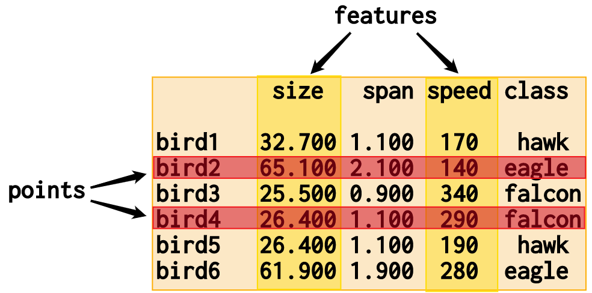

Nimble API Documentation¶
Welcome to the Nimble project’s API documentation for users.
All core functionality of Nimble can be accessed through the functions and
classes directly callable from nimble. Additionally, Nimble defined objects
that are returned by some of these functions are documented here as well.
Creating Data Objects¶
Nimble has 4 data types that share the same API. Each use a different backend to optimize the operations based on the type of data in the object. By default, Nimble will assign the type that it detects would be best based on the data and the packages available in the environment. The functions also include a parameter to set this manually. Selecting the type that best matches the data will make each operation as efficient as possible.
Type |
Data |
Backend |
|---|---|---|
List |
any data |
Python list |
Matrix |
all the same type |
NumPy array |
DataFrame |
each column has 1 type |
Pandas DataFrame |
Sparse |
mostly missing or 0 |
SciPy coo_matrix |
The primary functions for creating data objects are found at the top-level of
nimble. The cheatsheet can also be helpful source of information
about these functions.
|
Function to instantiate one of the Nimble data container types. |
|
Return a data object of the given shape containing all 1 values. |
|
Return a data object of the given shape containing all 0 values. |
|
Return a data object representing an identity matrix. |
|
Generate a data object with random contents. |
Using Data Objects¶
{kind=link}
A Nimble data object acts as the container of all individual elements of your data. But for manipulating that data, Nimble defines an API that abstracts away from the structure of how it is recorded to emphasize the meaning of how elements inter-relate.
Instead of operating on rows and columns (as with a spreadsheet or matrix),
Nimble defines methods over points and features. This aligns with the
goal of machine learning ready data, where each point should be a single
observation of unique variables and each feature should define a single
variable that has been recorded across observations. Nimble’s API provides
tools to tidy data towards that goal while behaving in a way that respects the
observational meaning of data.
The methods of Base control operations that apply to the entire object or
each element in the data. The Points and Features methods of the object
have additional methods for operations that apply along that axis of the data
object. The cheatsheet can also be helpful to find data object
methods.
The base class for all nimble data objects. |
|
Methods that apply to the features axis of a Base object. |
|
Methods that apply to the points axis of a Base object. |
Machine Learning with Interfaces¶
In Nimble, all algorithms used for machine learning or deep learning are
referred to as “learners”. Nimble provides interfaces to use learners defined
in popular machine learning packages, nimble.learners, and user created
custom learners. This makes a wide variety of algorithms available under the
same api. The cheatsheet can also be helpful to understand Nimble’s
machine learning API.
Choosing a learner
These functions help provide more information about the learners available for use within Nimble. The functions beginning with “learner” return a Python container with the relevant information. Often, a “learner” function has a corresponding function beginning with “show” that prints a more readable representation of the information to stdout.
Get a list of learners available to nimble or a specific package. |
|
Print the learners available to nimble or a specific package. |
|
Get a list of parameters for the learner. |
|
Print a list of parameters for the learner. |
|
Get a dictionary mapping parameter names to their default values. |
|
Get a dictionary mapping parameter names to their default values. |
|
Attempt to determine learner types. |
Using a learner
The following support the learning process. Functions with a learnerName
parameter accept a string in the format “package.learner”. This provides access
to learners in Nimble without the need to import them manually or remember
their exact location within the package. For example,
"nimble.KNNClassifier", "sklearn.LinearRegression", and
"keras.Sequential" are valid learnerName strings.
|
Train a specified learner using the provided data. |
Returned by nimble.train to access the learner trained model. |
|
Load nimble TrainedLearner object. |
|
Train a model and apply it to the test data. |
|
Train a model and get the results of its performance. |
|
Train a model using the train data and get the performance results. |
|
Modify data according to a produced model. |
|
Fill matching values using imputation learners. |
|
|
Triggers hyperparameter optimization to occur during training. |
|
Define the method to identify the best values to train the learner. |
Provide interface-specific objects as learner arguments. |
The table below shows the current interfaces built in to Nimble. As an added
convenience, some interfaces have additional aliases that can be used as the
package name in the learnerName string (i.e. "skl.LinearRegression"
instead of "sklearn.LinearRegression").
Package |
Aliases |
|---|---|
skl, scikitlearn, scikit-learn |
|
tf.keras, tensorflow.keras |
|
Custom Learner¶
Custom learners can be created by inheriting from nimble.CustomLearner.
These can then be provided as an argument to the functions above to perform
machine learning.
Class for creating custom learners for use within the Nimble API. |
Configuration¶
Since most packages that support Nimble are optional, showAvailablePackages
is provided to display the available packages in the current environment.
Nimble also has settings that can be configured. The default settings load when
the package is imported and can be changed during the session. Changes to
configurable settings are made through nimble.settings, a
SessionConfiguration instance that provides methods for getting and setting
configurable options. Changes to options can apply to the current session or be
saved as the new default settings. Currently, Logging and
Fetching Files have sections that can be configured.
Display the availability of optional dependency packages. |
|
User control over configurable options. |
|
Returned by nimble.settings to manage configurable settings. |
Logging¶
By default, Nimble keeps a running log of the actions taken each session. The
log can be added to and queried using nimble.log and nimble.showLog,
respectively. There are four configurable options in the
“logger” section. By default, the “location” is the current directory and the
file “name” is “log-nimble”. The “enabledByDefault” option is set to “True” and
“enableDeepLogging” is set to “False”.
|
Enter an entry into the active logger’s database file. |
Output contents of the logger’s database file. |
Fetching Files¶
Nimble’s fetchFile and fetchFiles provide efficient means for accessing
online datasets. When a new source is passed to a fetch function, it
downloads and stores the files in a directory named “nimbleData” in a
configurable local location. When a repeated source
is passed to a fetch function, no downloading occurs because the data can be
fetched locally. The local storage location is identified by the “location”
option in the “fetch” section and is set to the home directory by default.
Get a data file from the web or local storage. |
|
Get data files from the web or local storage. |
Submodules¶
Functions that perform calculations on Nimble-defined objects. |
|
Module defining exceptions used in Nimble. |
|
Collection of functions providing methods for filling values in the data with other values. |
|
These out-of-the box learners are all registered during Nimble initialization. |
|
Collection of functions determining if a data value or entire data object satisfy a given condition. |
|
Module for random operations with Nimble. |